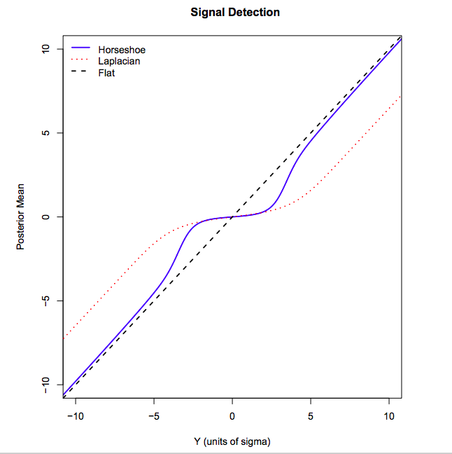
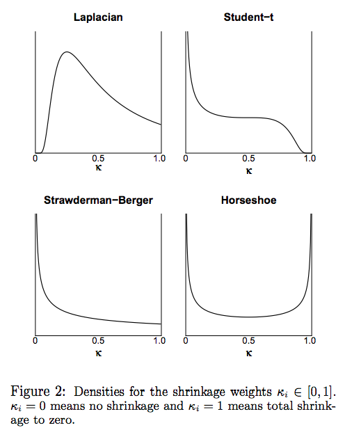
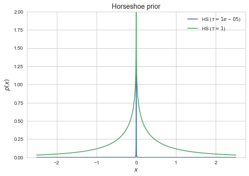
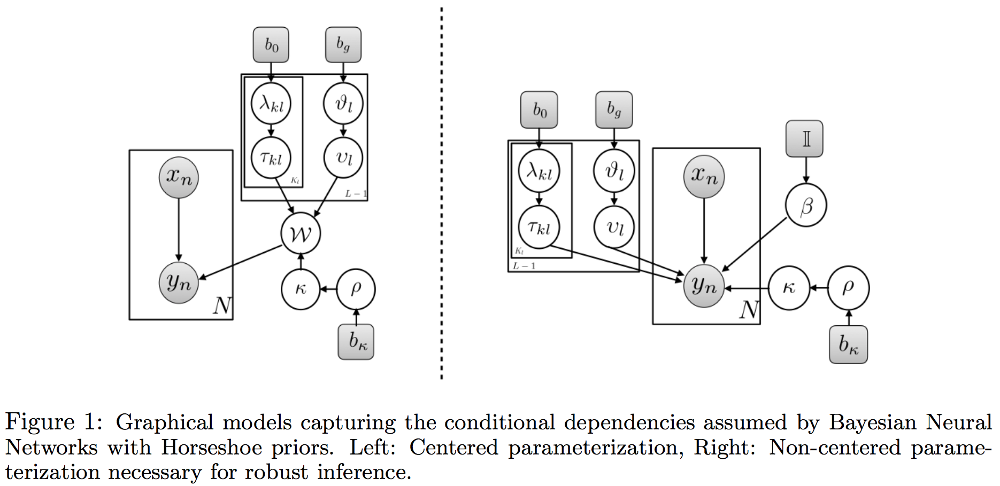

The Horseshoe Prior
Статьи, которые будут затронуты в этой заметке:
- Bayesian Compression for Deep Learning
- Model Selection in Bayesian Neural Networks via Horseshoe Priors
Прежде всего хочется обратить внимание на то, что вопрос об априорных распределениях для нейронных сетей очень плохо раскрыт. Стандартный приор - это нормальное распределение \(\mathcal{N}(0, 1)\). Однако такое распределение плохо работает, когда параметров модели очень много. Для того, чтобы учесть это априорное знание об избыточности модели, необходим приор, который спарсит решение, поощряет нулевые решения, распределения, концентрированные в нуле.
Смеси Гауссиан
Распределение Horseshoe является бесконечной смесью нормальных распределений с разными параметрами стандартного отклонения. При этом смесь устроена особым образом.
\[ \begin{align} w|z &\sim \mathcal{N}(0, z^2) \\ z &\sim p(z) \\ p(w) &= \int p(w|z)p(z)dz \end{align} \]
Выбор \(p(z)\) будет давать совершенно различные маржинальные распределения для \(p(w)\). Так, например, выбор \(p(z^2) = Exp(\lambda)\) приведет к распределению лапласа для \(p(w)\), такой выбор приора известен как Лассо. Но это распределение подавляет не только слабые сигналы, но и информативные, что не является хорошим свойством.
Если же взять распределение Half Cauchy (с параметром \(\tau\)) для \(p(z)\), то мы получим распределение Horseshoe на \(p(w)\). Название не случайно и оно не привязано к конкретному выбору \(p(z)\). Принципиальным будет соблюдение свойства, описанного ниже.
Почему Horseshoe?
Название переводится как “подкова”. Оно пришло из эконометрики, где этот приор использовался для коэффициентов линейной модели. Лассо, Гребневые (Ridge) регрессии использовались для регуляризации коэффициентов, чтобы уменьшить дисперсию оценки, при этом возникало смещение от матожидания оценки методом максимального правдоподобия. Величину этого смещения можно оценить при некоторых предпосылках.

Если рассматривать сам коэффициент “смещения”, как случайную величину, то получим другой график где можно разглядеть форму подковы. Отсюда и название.

Вероятностная модель

Для достижения групповой спарсити сделана модификация распределения и смесь берется иначе. Выглядит это так: \[ \begin{align} w_{ij} | z_i, s &\sim \mathcal{N}(0, z_i^2 s^2)\\ z_i &\sim C^+(0, 1) \\ s &\sim C^+(0, \tau_0) \end{align} \] В данной параметризации есть два источника спарсити. Первый, создаваемый \(z_i\) направлен на каналы/нейроны в зависимости от того, где используется. Второй источник \(s\) направлен сразу на все веса. Параметр \(\tau_0\) характеризует интенсивность спарсификации всей модели. Меньшие значения соответствуют более разреженной модели. Обычно \(s\) больше сконцентрирована в нуле, чем \(z_i\), если сигнал информативен, то \(z_i\) компенсирует \(s\) и наоборот. Это можно увидеть на графике выше, аналогичная параметризация априорных распределений используется в статье [1].
Рассмотрим различные подходы для вывода в этой модели. Все они основаны на разложении распределения Half Cauchy в более простые, но вовлекающие вспомогательные распределения.
InvGamma+InvGamma
Распределение Half Cauchy можно представить как сложную случайную величину, количество латентных переменных увеличивается
\[ \begin{align} a \sim C^+(0, b) \: \Leftrightarrow \; a|\lambda &\sim \mathcal{IG}(\frac{1}{2}, \frac{1}{\lambda}) \\ \lambda &\sim \mathcal{IG}(\frac{1}{2}, \frac{1}{b^2}) \end{align} \] Предложенная в работе [2] параметризация довольна экзотична. Она подразумевает иерархичность разложения распределения HalfCauchy. Авторы утверждают, что исходная вероятностная модель плохо подходит для варвывода из-за non-Centered параметризации и предлагают альтернативу. Почитать, почему это плохо, можно здесь. У самих же авторов non-centered параметризация работала лучше.

Соблюдая нотацию данной статьи запишем, как выглядит модель одного единственного слоя в случае non-centered параметризации. \[ \begin{align} \log p(\beta, \tau, \lambda, v, \nu) &= \sum_{i, j} \mathcal{N}(\beta_{ij}|0,I)\\ &+ \sum_{i} \underbrace{ \mathcal{IG}(\tau_i|\frac{1}{2}, \lambda_i) + \mathcal{IG}(\lambda_i| \frac{1}{2}, \frac{1}{b_0^2}) }_{\tau_i \sim C^+(0, b_0)\; \text{# local/group sparsity}}\\ &+ \underbrace{ \mathcal{IG}(v|\frac{1}{2}, \nu) + \mathcal{IG}(\nu| \frac{1}{2}, \frac{1}{b_g^2}) }_{v \sim C^+(0, b_g)\; \text{# global/layer sparsity}} \end{align} \] В качестве апостериорного распределение выбирается факторизованное по всем переменным, причем используются следующие семейства \[ \begin{align} q(\beta_{ij}) &= \mathcal{N}(\beta_{ij}| \mu_{ij}, \sigma^2_{ij})\quad &\text{Gaussian family}\\ q(\tau_i) &= \mathcal{LN}(\tau_i| \mu_{\tau_{i}}, \sigma^2_{\tau_{i}}) &\text{Log Normal family}\\ q(\lambda_i) &= \mathcal{IG}(\lambda_i| c_{\lambda_i}, d_{\lambda_i}) &\text{Inverse Gamma, closed form update}\\ q(v) &= \mathcal{LN}(v| \mu_{v}, \sigma^2_{v}) &\text{Log Normal family}\\ q(\nu) &= \mathcal{IG}(\nu| c_{\nu}, d_{\nu}) &\text{Inverse Gamma, closed form update}\\ \phi &=\{\mu,\sigma, \mu_{\tau}, \sigma_{\tau}, \mu_{v}, \sigma_{v}\}& \end{align} \] Для вывода используется вариационное приближение и использование fixed point updates путем выведения маргинального распределения на вспомогательные переменные (\(\lambda_i\), \(\nu\)) аналитически. Дополнительно стоит отметить факт, что авторы используют Black Box VI для градиентной итерации по \(\phi\). При этом не используется KL дивергенция \(KL(\mathcal{LN}||\mathcal{IG})\), хотя авторы конкурирующей статьи ее выводят. Что касается параметров \(\{c_{\lambda}, d_{\lambda}, c_{\nu}, d_{\nu}\}\), для них выводится маргинальное апостериорное в явном виде в шаге с fixed point update, показано, что это будет Inverse Gamma распределение.
Gamma+InvGamma
Такая параметризация предложена в работе [1], выглядит проще, хотя ее преимущество перед первым вариантом не очевидно, хоты бы потому, что в первом случае считалось меньшее количество градиентов, меньше сэмплирования и тд. Распределение Half Cauchy раскладывается в произведение корней двух случайных величин:
\[ \begin{align} z \sim C^+(0, \tau) \;\Leftrightarrow \;\; & z_a \sim \mathcal{G}(0.5, \tau^2) \\ & z_b \sim \mathcal{IG}(0.5, 1) \\ & z = \sqrt{z_a z_b} \end{align} \] Модель для вывода выбирается тоже non-centered, при этом нету сравнений с centered параметризацией. \[ \begin{align} \tilde{W}_{ij} & \sim \mathcal{N}(0, 1) \\ z_i & = \sqrt{z_{a_i} z_{b_i}} &z_{a_i} \sim \mathcal{G}(0.5, \tau^2_z) \quad& z_{b_i} \sim \mathcal{IG}(0.5, 1)\\ s & = \sqrt{s_a s_b} & s_a \sim \mathcal{G}(0.5, \tau^2_s) \quad& s_b \sim \mathcal{IG}(0.5, 1)\\ W_{ij} & = \tilde{W}_{ij}z_i s \end{align} \]
В нотации этой работы \(z\) - латентная переменная которая поощряет локальную разреженность (выкидывание нейронов), \(s\) поощряет разреженность в слое. Выбор апостериорных аппроксимаций не случаен, все для удобной KL дивергенции.
\[ \begin{align} q(W) &= \mathcal{N}(M_w, \Sigma_w) & \\ q(z_a) &= \mathcal{LN}(\mu_{z_a}, \sigma_{z_a}) &\quad q(z_b) = \mathcal{LN}(\mu_{z_b}, \sigma_{z_b}) \\ q(s_a) &= \mathcal{LN}(\mu_{s_a}, \sigma_{s_a}) &\quad q(s_b) = \mathcal{LN}(\mu_{s_b}, \sigma_{s_b}) \end{align} \]
Варвывод в этой статье более простой за счет явного вывода \(KL(\mathcal{LN}||\mathcal{G})\), \(KL(\mathcal{LN}||\mathcal{IG})\). Более подробно это рассмотрен в статье
Схожие работы
Sparsity
Log Uniform prior. Вводится логнормальное априорное распределение на параметры. Апостериорное распределение характеризуется гауссовским дропаутом с аддитивной параметризацией. \[ \begin{align} p(w_{ij}) &\propto \frac{1}{|w_{ij}|}\\ q(w_{ij}) &= \mathcal{N}(w_{ij}| \theta_{ij}, \alpha_{ij}\theta_{ij}^2) \end{align} \] Помимо этого аппроксимирована ненормализованная \(KL(q||p)\), что позволяет эффективно обучать большие сети с небольшой дисперсией градиента.
Spike and Slab prior. Априорное распределение представляет собой смесь дельта функции и нормального распределения.
\[ p(w_{ij}) = \delta_0(w_{ij})\pi + (1-\pi)\mathcal{N}(w_{ij}| 0, 1) \]
Group Sparsity
Normal Jeffreys prior. Априорное распределение очень связанное с Log Uniform, но позволяющее делать групповое спарсити. \[ p(W, z) \propto \prod_i^A \frac{1}{|z_i|}\prod_{i,j}^{A, B}\mathcal{N}(w_{ij}|z_i\mu_{ij}, z_i^2\sigma_{ij}^2) \]
Truncated Log Uniform prior. В этой работе основная идея - контролировать связи между слоями с помощью мультипликативного шума. Априорным распределением на шум является truncated Log Uniform, апостериорным truncated Log Normal (априорное распределение в этом случае tractable). Сами веса остаются свободными параметрами. По сути это работает как альтернатива дропаут слою. Групповое спарсити достигается за счет структуры мультипликативного шума.
Саммари
| prior | tractable | grouped version | within layer |
|---|---|---|---|
| LogUniform | no | no | yes |
| Spike&Slab | yes | no | yes |
| Normal Jeffreys | no | yes | yes |
| Tr. Log Uniform | yes | yes | no |
| Horseshoe | yes | yes | yes |
Этот обзор, конечно, не претендует на исчерпывающий, но хорошо показывает место Horseshoe среди других аналогичных подходов.